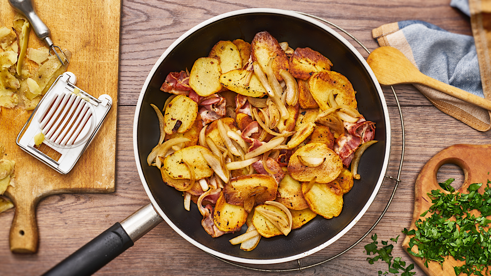

Bratkartoffeln mit Speck und Zwiebeln

Description
Knusprig, goldgelb und kross- so einfach gelingen die perfekten Bratkartoffeln mit Speck und Zwiebeln. Die liebt wirklich jeder- ob groß oder klein. Schmecken wie bei Oma!
Zutaten
2 Portionen
- 500g Kartoffeln
- 80g Speckwürfel
- 50g Zwiebeln
- 1 EL Butterschmalz
- 1 EL Petersillie
- etwas Salz
- etwas Pfeffer
Zubereitung
- Kartoffeln pellen und in 3-5 mm dicke Scheiben schneiden.
- Speckwürfel in einer Pfanne knusprig anbraten.
- Zwiebel schälen und in Spalten schneiden, zum Speck in die Pfanne geben und goldbraun anbraten. Speck und Zwiebeln aus der Pfanne nehmen und beiseite stellen.
- Butterschmalz in die Pfanne geben, heiß werden lassen und die Kartoffelscheiben darin bei mittlerer Hitze nebeneinander von einer Seite goldbraun anbraten. Dann erst wenden und von der anderen Seite anbraten. Speck und Zwiebel zugeben, mit heiß werden lassen und nach Belieben mit Salz und Pfeffer würzen und abschmecken. Petersilie waschen, trocken schütteln und kleinhacken. Mit Petersilie bestreut servieren.